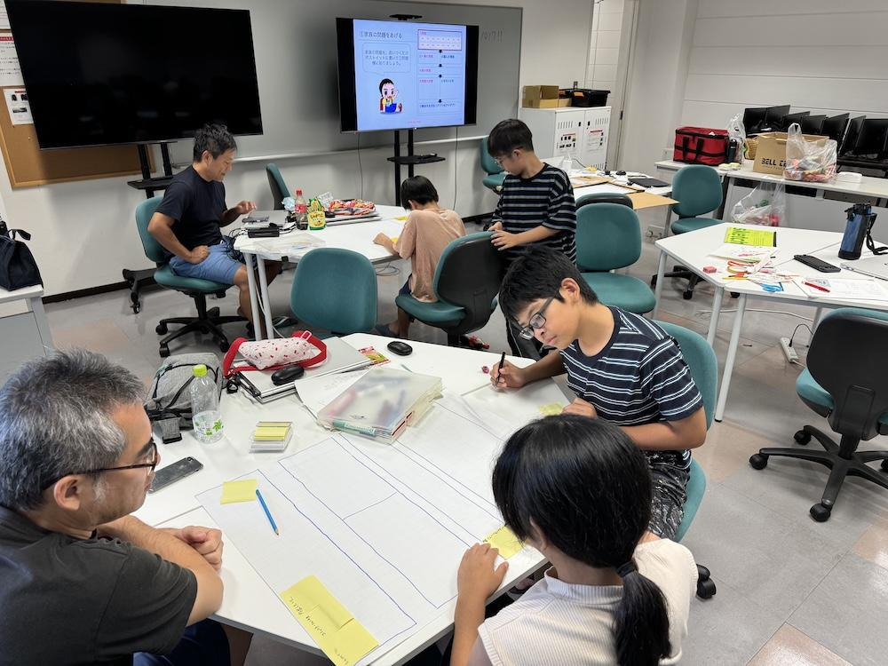
実施期間2024年4月〜2025年3月
4月から3月まで計90回、ロボット部門と親子でデジタル創作部門を実施しました。
ロボット部門と親子でデジタル創作部門に分かれ、WROへの挑戦と生成AIを使った作品制作を軸に実施されました。
2024年度は計90回開催され、参加者21名がロボット部門と親子でデジタル創作部門に分かれて活動しました。ロボット部門ではWRO沖縄大会・全国大会・岐阜交流大会を目指し、親子でデジタル創作部門では生成AIを使ったLINEスタンプ、Kindle電子書籍、スマホアプリ開発に挑戦しました。

4月から3月まで計90回、ロボット部門と親子でデジタル創作部門を実施しました。
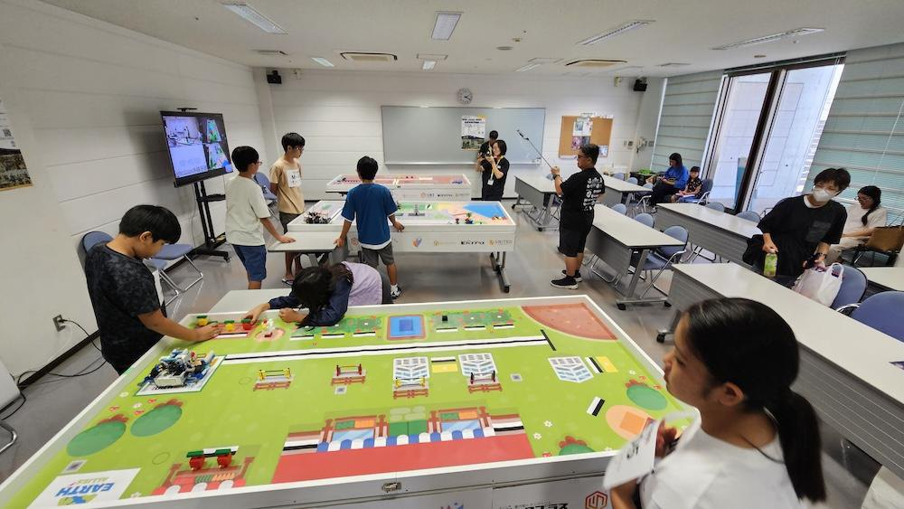
親子でデジタル創作部門11名、ロボット部門10名。小学生12名・中学生9名が参加しました。
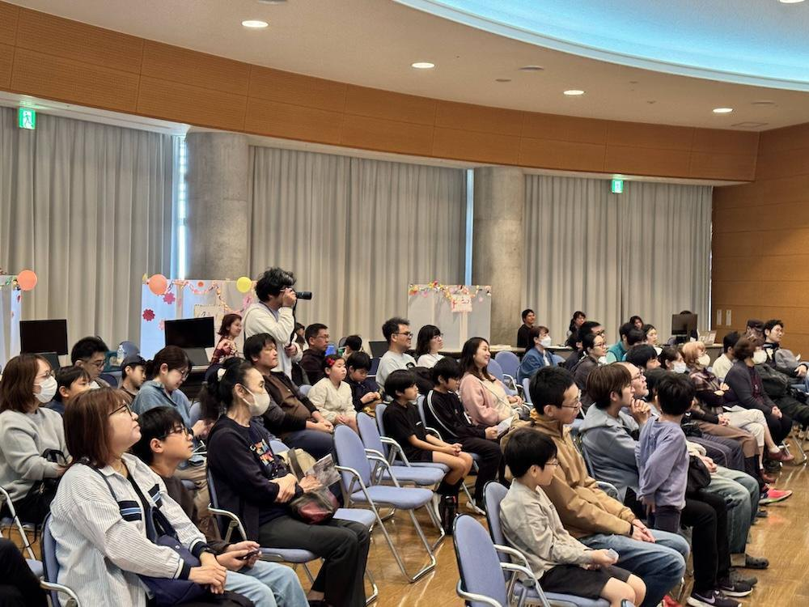
WRO大会への挑戦と、LINEスタンプ・電子書籍・アプリ制作を軸に学びました。
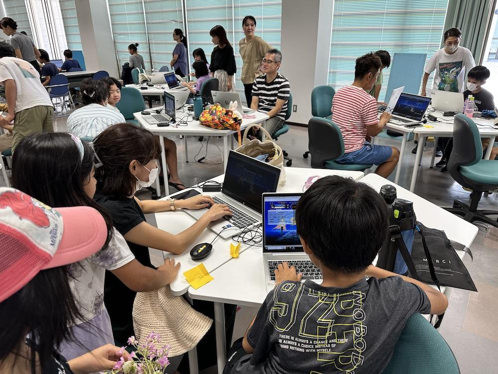
WRO沖縄推進委員会のもと、年間を通じてロボットプログラミングを学び、大会や交流大会へ挑戦しました。
親子で生成AIやアプリ開発に取り組み、制作物の販売や発表、一般来場者への体験レクチャーにも挑戦しました。
親子での生成AI活用、作品展示、ロボット競技、Minecraftイベント、最終報告イベントまで、学びを体験と発表に結びつけました。
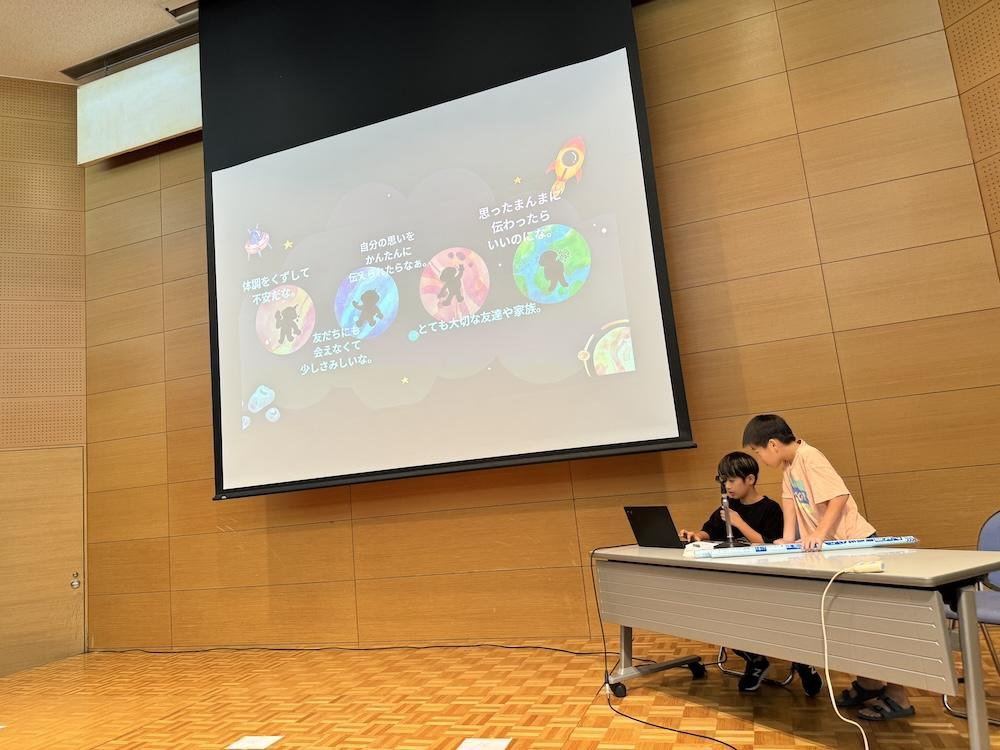
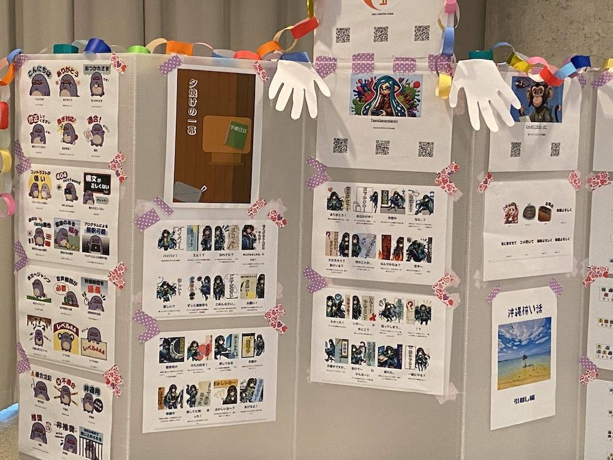
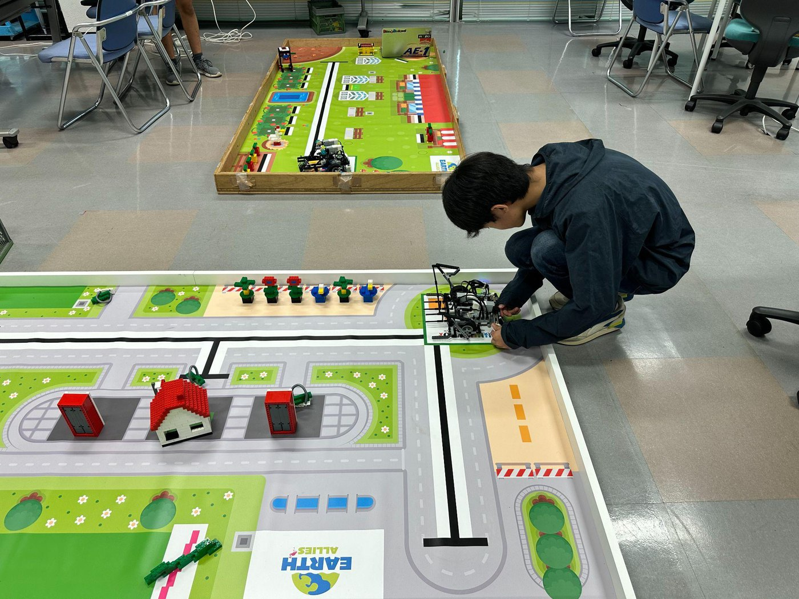
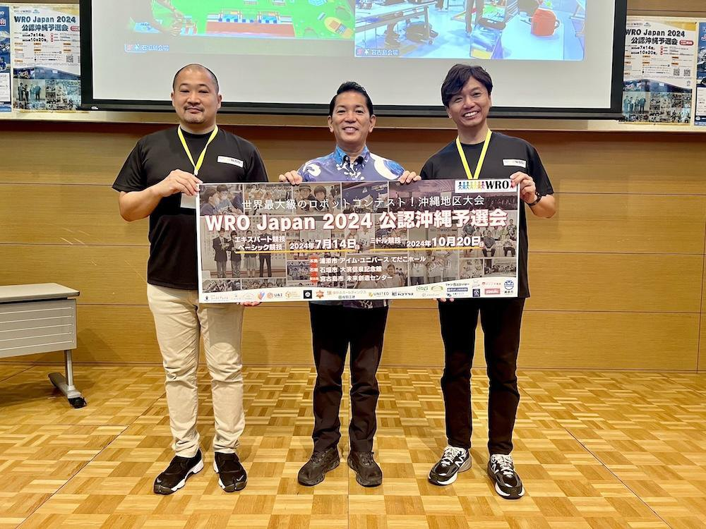
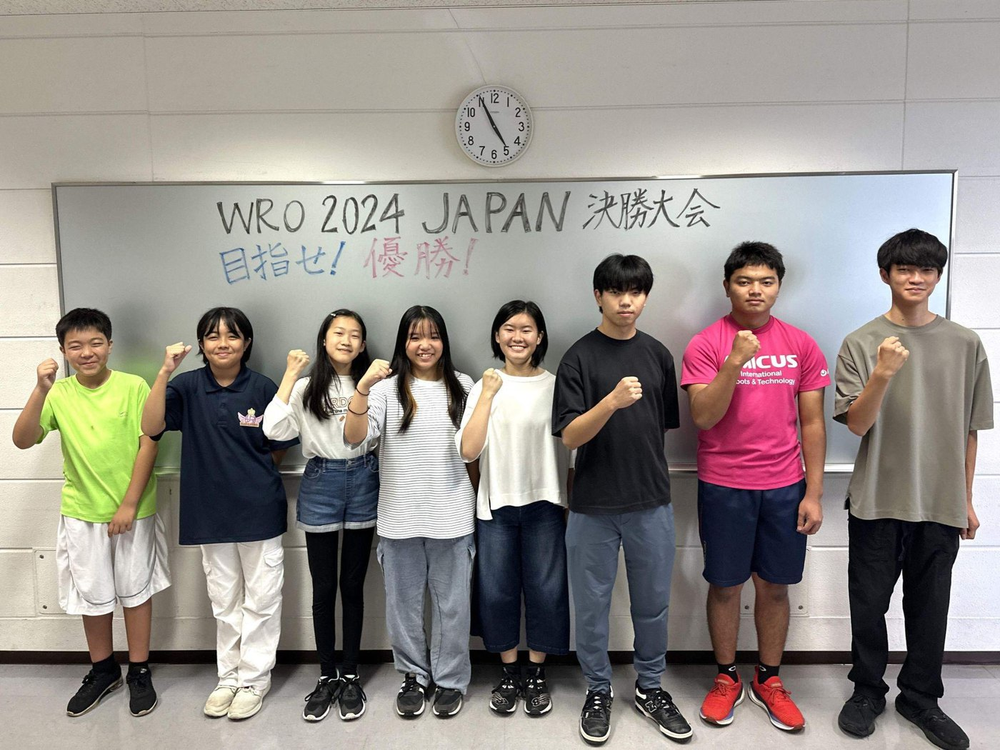
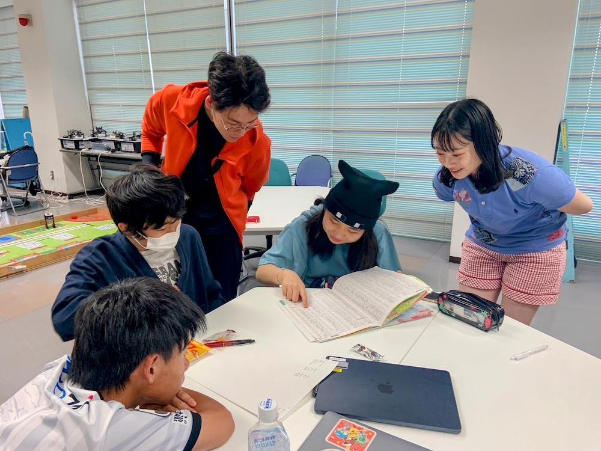
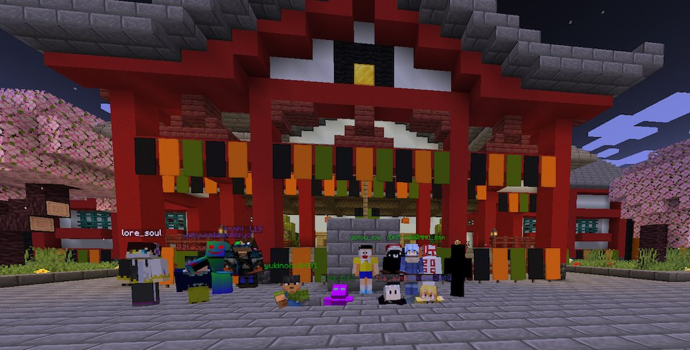

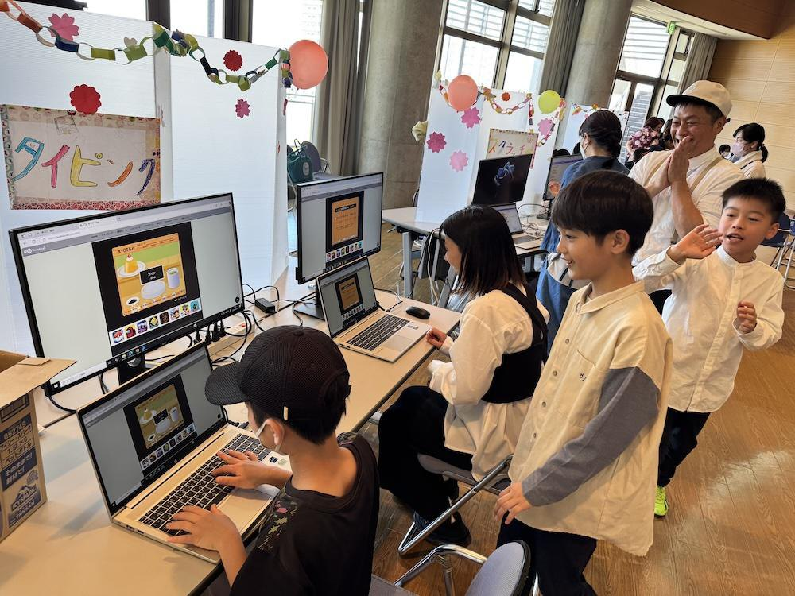
LINEスタンプ、電子書籍、スマホアプリ、WROロボット、体験ブースなど、参加者は年間の学びを具体的な作品と発表の形にしました。
親子で生成AIを活用し、LINEスタンプやKindle電子書籍の制作・販売に挑戦しました。
ロボット部門では、WRO大会や交流大会を目標に、チームで試行錯誤を重ねました。
年間の学びを参加者自身が一般の子どもたちに体験してもらうイベントとして発表しました。